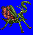
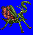
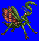
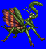

Height: Between 5 cm and 5 m Weight: Varies
Habitat: Plains Origin: ???
Meaning: From the greek "mantis" meaning "predator"
Of the 1800 species of mantis in the world, some can become quite large, reaching up to 5 meters long. The female is typically larger than the male. In some species, the teeth are like saw blades, cutting through prey, while in others, the tongue is more developed. Depending on species, typical prey include insects, frogs, and toads.